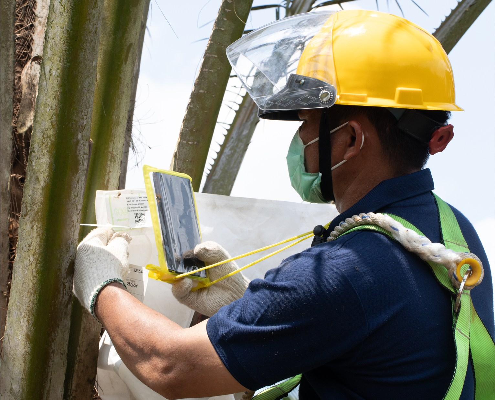
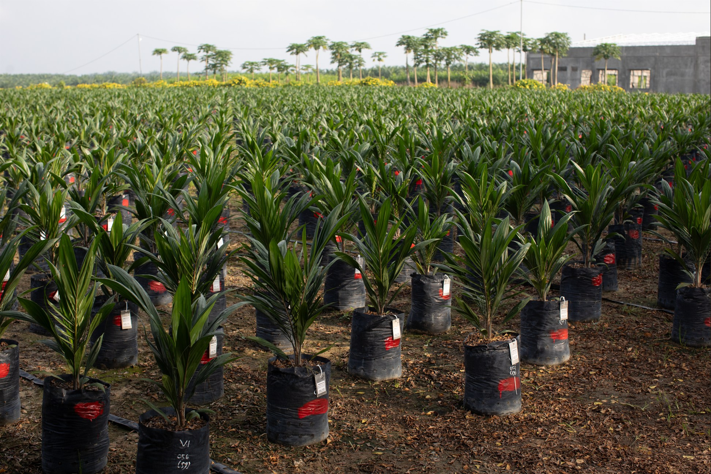

Full-stack developer / Database engineer
Software built around
real work.
I build web and mobile applications, APIs, and databases. My background in field operations and research helps me understand how the software will be used day to day.
Web, mobile, APIs, databases, and deployment
data, and operations
operational data
Web · Mobile · API · Database · Deployment
01
About / operations and software
I came to software through operations and data.
Before moving into full-stack development, I worked with field operations, research, logistics, and monitoring teams.
That experience taught me to start with the actual process: who does the work, where the data comes from, and what happens when something goes wrong. I then shape the interface, API, and database around those details.
- Education
- Computer Science, STMIK Mikroskil, 2012
- Industry foundation
- Retail, agriculture, R&D, logistics, and traceability
- Current build focus
- Web applications, mobile apps, APIs, and relational databases
The work
How the process happens
People, handoffs, constraints, and exceptions.
The software
How the process is supported
Interfaces, APIs, and data models built around those details.
02
Expertise / across the stack
From interface
to database.
I keep the interface, API, and data model aligned around the same user task and rules.
01
Frontend product development
React and Next.js interfaces for administration, event discovery, forms, and checkout.
- React
- Next.js
- TypeScript
02
Mobile & device data
React Native and Expo apps with health-data integration, background sync, and secure local state.
- React Native
- Expo
- Health APIs
03
Backend & system reliability
REST APIs with validation, role checks, ownership rules, and transactional updates.
- Node.js
- REST APIs
- RBAC
04
Database & automation
Relational schemas, SQL reporting, GIS workflows, and database automation.
- PostgreSQL
- Prisma
- SQL Server
03
Recent work / 2026
Langkah Sehat
and Eventure.
One is a company step-tracking app with an admin portal. The other is a shared event platform with transaction-heavy checkout and lifecycle rules.
Step tracking
without continuous GPS.
Langkah Sehat combines an Expo mobile app with a Next.js admin portal. The mobile app reads health data in batches, while the admin side handles registration, departments, and competitions.
- 01 Expo / React Native mobile architecture
- 02 Health Connect and HealthKit aggregation
- 03 Registration, departments, and competition controls
- 04 Signed Android demo and deployed admin preview
Demo APK and admin preview. Production credentials are not included.
09:41
LSLangkah Sehat
Good morning, Hendrik
8,426steps today
6.2km
312kcal
#4rank
Team leaderboard
Admin overview● Demo
Active members128
Departments08
Weekly participation
Registration review
ARAwaiting approvalReview
DSDepartment updatedDone
A shared event platform
with transactional checkout.
Eventure uses a Next.js frontend, Express API, shared contracts, and a Prisma database package. Checkout coordinates seat inventory, vouchers, coupons, points, and transaction status changes.
- 01 React web application and Node.js API
- 02 Prisma domain model with PostgreSQL
- 03 RBAC plus resource ownership enforcement
- 04 Serializable checkout with seat and benefit restoration
Shared project · contributions described in the build notes
18 / OCT
Eventure
Sessions
Jakarta · 19:00
Secure checkout03:42
EV
Eventure Sessions2 × General Admission
SubtotalRp 500.000
Voucher- Rp 50.000
Points- Rp 25.000
TotalRp 425.000
Seats are reserved transactionally
04
Earlier work / field and research systems
Earlier work in operations and research.
This work included plantation traceability, GIS mapping, research databases, and fertilizer recommendation tools.

01 / 03
Traceability &
field recording
Android field recording, barcode tracking, and traceability tools that connected plantation activity with operational database records.

02 / 03
GIS automated
mapping
A MapInfo workflow connected operational records to repeatable map production for research and planning.
03 / 03
Research data &
decision support
Database and decision-support work for plant-breeding trials, bunch-analysis laboratories, field inspection, and fertilizer recommendations.
Some enterprise work is not publicly linked. Project details can be discussed directly.
05
Working principles
Understand the process
before writing the solution.
-
01
Learn the process
Walk through the handoffs, exceptions, and failure cases before choosing an implementation.
-
02
Keep the layers aligned
The interface, API, and database should enforce the same rules.
-
03
Make the user's job easier
Handle validation and edge cases inside the system instead of adding work for the user.